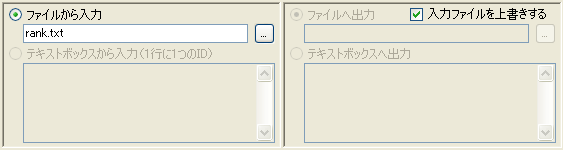

Ver 0.96 からランクファイルの入力と出力が分離されました。

例えば、「詳細情報更新」を行う場合、入力ランクファイルと出力ランクファイルを別のファイル名にしておけば、 入力ファイルが上書きされずに、更新された情報が出力ファイルに出力されます。
入力ファイルと出力ファイルを同じファイル名に指定すれば、従来と同じ動作（指定したファイルが上書き）になります。 「入力ファイルを上書きする」にチェックを入れた場合も同じです。
「FLV ダウンロード」など、出力ファイルが不要な操作では、出力ファイルは無視されます。また、「ランキング解析」など、 入力ファイルが不要な操作では、入力ファイルは無視されます。